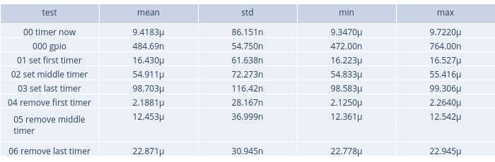
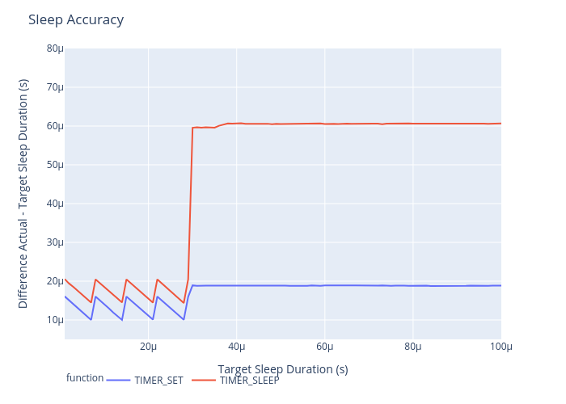
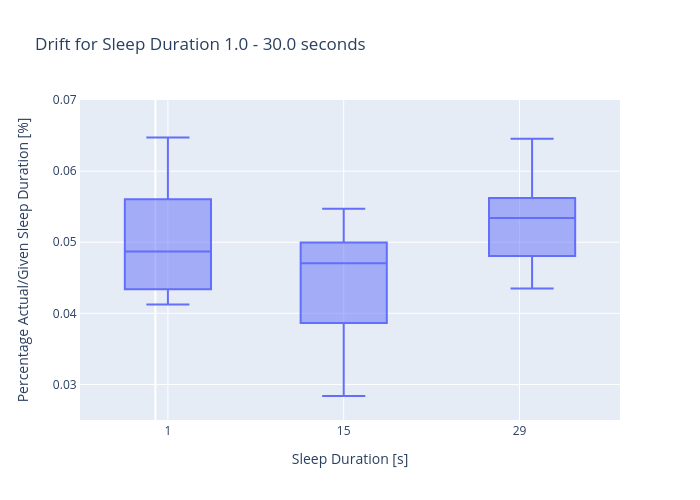
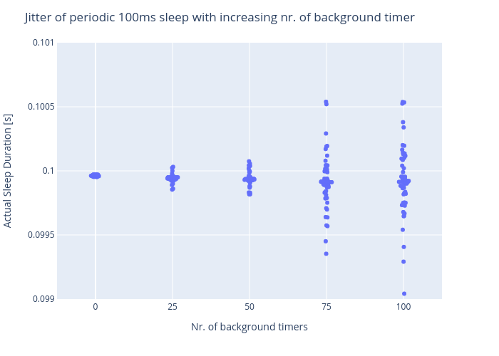
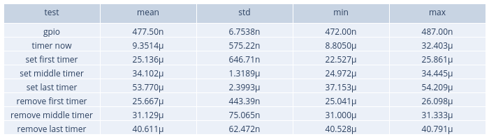
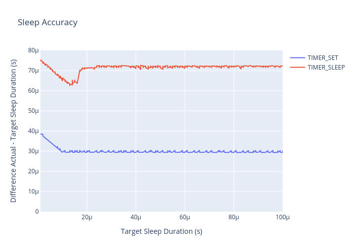
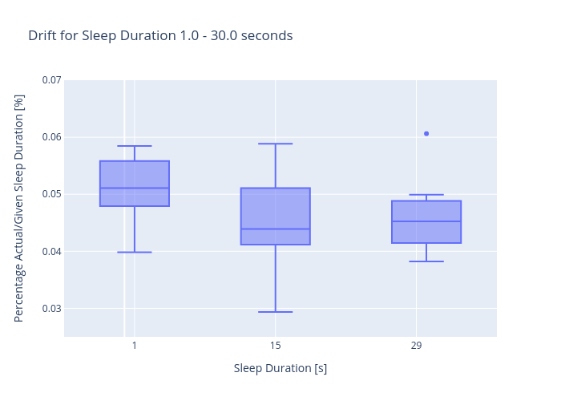
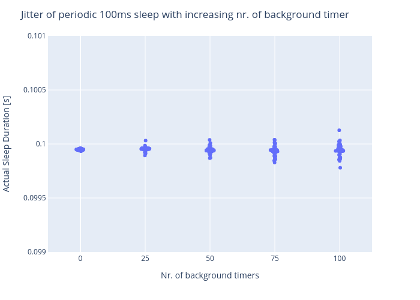

Info
RIOT release 2020.07
BOARD=samr21-xpro
Overhead
GPIO: 5000 samples
timer now: 5000 samples
other: 50 samples
10us difference when setting a timer
xtimer overhead rose significantly (+38us, +44us) vs (+8us, +20us)
when removing a set timer, overall xtimer is faster
Accuracy
the "at least" sleep approach is more "true"
In general, ztimer has +10us overhead compared to xtimer
Drift
y-axis= (DUT - PHILIP) / Target * 100
Jitter
jitter is way less in ztimer
XTIMER
   
ZTIMER
   